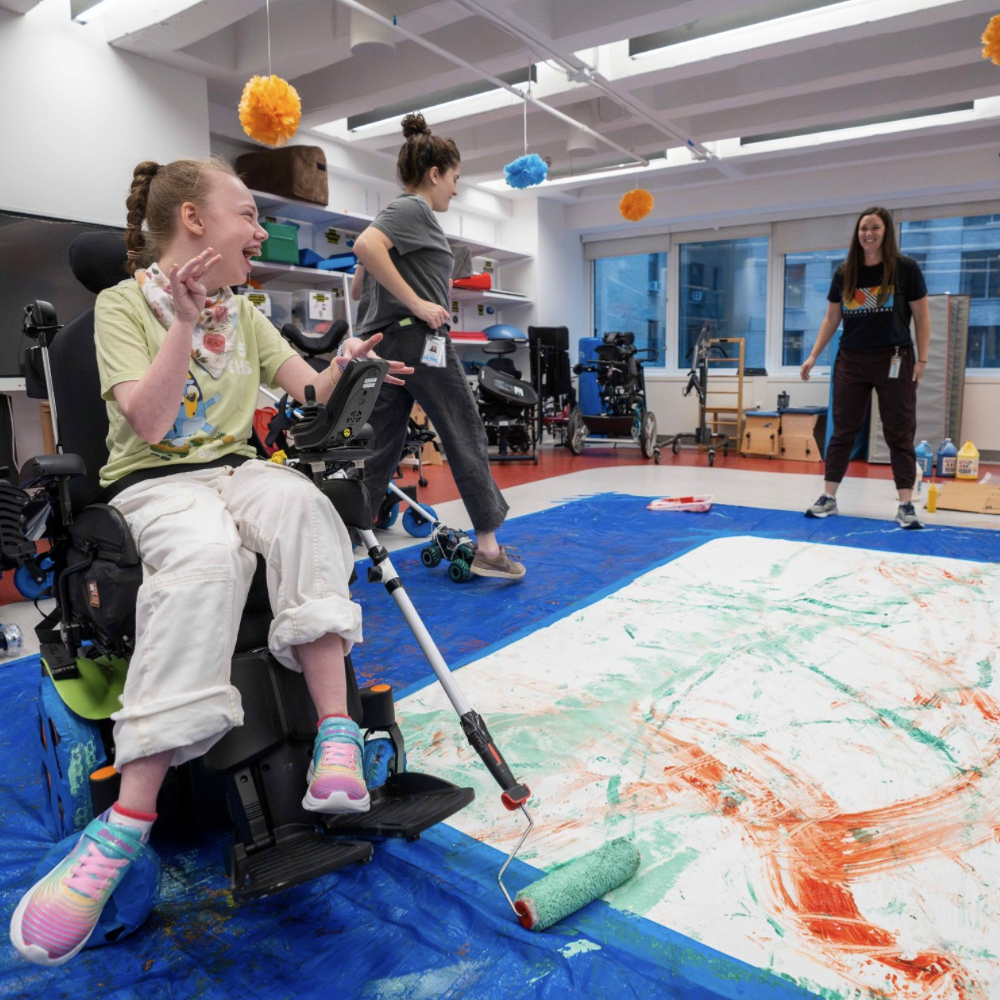

The AT Hacker Group
A service design project for iHOPE that streamlines the repair journey of broken assistive technology devices.
✦ Client project for the International Academy of Hope (iHOPE)
"The body shouldn't be a handcuff to their heads." — Gretchen Hanser, Director of Assistive Technology and Literacy Instruction
About iHOPE
For students at iHOPE, assistive technology is how they make art, communicate, and move through the world.
iHOPE is a specialized school in Manhattan serving students aged 5–21 with traumatic and acquired brain injuries. Their Assistive Technology team evaluates, builds, trains, and repairs the devices that make learning possible for every student.
Students at iHOPE make art with joysticks. They communicate with buttons. They swim with machines.

The Challenge
4 to 10 devices break every week, and the AT team spends hours in the repair room instead of with their students.
The AT team juggles caseloads of 10 students each, 12 hours of weekly consultations, insurance reports, and training. On top of all of that, 4 to 10 devices break every week and end up in the broken bin.
The weekly repair rotation pulls team members away from the students who need them. Some devices never come back.
"Fixing and soldering is not a good use of time. We need to spend more time with the kids." — Gretchen Hanser
Reframing the Problem
The AT team needs the repair work taken off their plate entirely, by someone skilled enough to do it well and available enough to do it consistently.
The AT team does not need a better repair process. They need the repair work taken off their plate entirely, by someone skilled enough to do it well and available enough to do it consistently.
When we asked iHOPE what kind of help they needed, they said: a retired engineer.

The Insight
Three design principles emerged from what iHOPE said they actually needed.
Three values emerged from that image and became the design principles behind the solution.
Skilled and quick: someone with just enough technical ability to solder and repair reliably.
Available and returning: not a one-time volunteer, but someone who shows up on a regular basis.
Easy to collaborate with: low friction, clear communication, no heavy onboarding from iHOPE's side.
The Solution
Translating "retired engineer" into a scalable volunteer system.
AT Hacker Group is a structured volunteer program that recruits undergraduate engineering students from universities in New York, trains them on AT repair, and runs biweekly workshops at iHOPE. The repair work moves out of the AT team's hands and into a consistent, skilled volunteer pipeline.
The 4-Step Program
01 Partnering
Establish relationships with university engineering programs and define the volunteer scope.
02 Onboarding
Train volunteers on AT basics, safety, and iHOPE's repair catalog. One session to get started.
03 Workshop
Biweekly repair sessions at iHOPE. Volunteers work through the broken bin. The AT team stays with students.
04 Evaluating
Track repair volume and volunteer satisfaction. Refine the pipeline each semester.
Reflections
Challenges
- Working within iHOPE's capacity constraints: any solution had to add zero burden to the AT team
- Understanding a system we were outside of, without medical or engineering backgrounds of our own
- Designing a program that does not yet exist, with no existing volunteer pipeline to build from
Accomplishments
- Reframed a repair problem as a relationship-building opportunity
- Identified university engineering students as the right stakeholders: skilled, motivated, and available
- Delivered a proposal that iHOPE could realistically adopt without changing how they work
Learnings
- The right solution sometimes comes from outside a system entirely, not from optimizing what is already there
- When a client says "we need a retired engineer," the real insight is buried in what they actually mean
"A problem that cannot be solved from the inside still has a solution. It just comes from somewhere else."